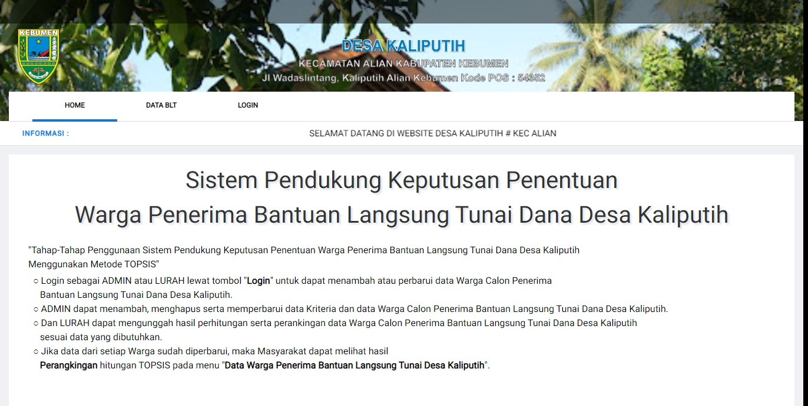

⌂
Tentang Saya
Pengalaman
Proyek
≡
⌂
Tentang Saya
Pengalaman
Proyek
≡

|
Saya adalah seseorang yang memiliki minat yang besar pada dunia IT khususnya pada Web Developer dan Graphic Design. Dalam Web Developer yang saya minati, saya cukup mengerti penggunaan bahasa pemrograman HTML, PHP, CSS dan JS. Lalu untuk Graphic Design, saya cukup menguasai penggunaan software CorelDRAW. Saya senang belajar hal baru, khususnya ketika perusahaan yang saya tuju memerlukan ilmu atau skill yang sebelumnya belum saya kuasai. |
Pengalaman
Proyek
| Saya merancang sistem menggunakan bahasa pemrograman PHP, CSS dan JS untuk tugas akhir kuliah saya. Sistem ini saya buat dengan maksud untuk menyelesaikan tugas akhir saya sebagai mahasiswa dan membantu dan mempermudah kinerja instansi kesehatan dan puskesmas yang berada di Kecamatan Jetis Yogyakarta dalam analisis data dan olah data penanganan dengan lebih cepat, tepat, efektif dan efisien untuk menentukan wilayah mana yang perlu didahulukan dalam penanganan fogging. | |
|  | Saya merancang sistem ini untuk membantu menyelesaikan tugas akhir rekan kuliah saya Sama seperti sistem yang saya buat sebelumnya, sistem ini saya menggunakan bahasa pemrograman PHP, CSS dan JS. Sistem ini dibuat dengan maksud untuk membantu penyelesaian lebih cepat, tepat, efektif dan efisien dalam menentukan warga penerima BLT. |

|
Pada sistem ini, saya mendapatkan bagian dalam perancangan tampilan (Front End) untuk sistem pakar diagnosa penyakit hama dan penyakit tanaman jamur tiram putih. |